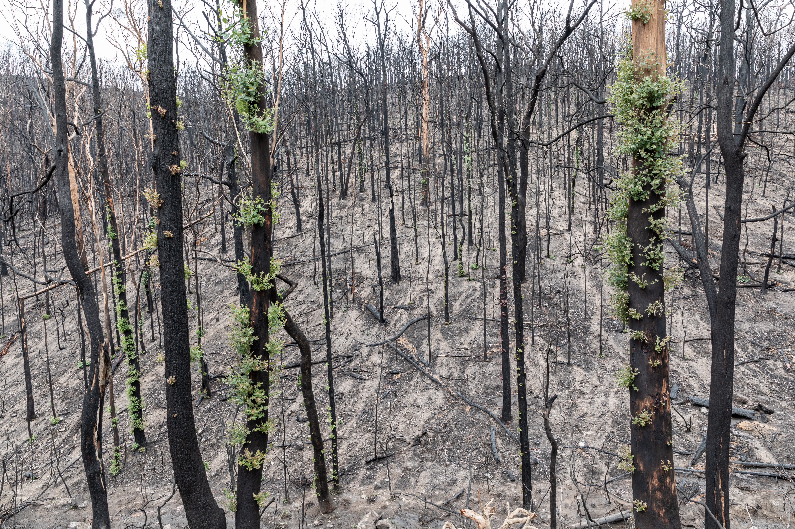
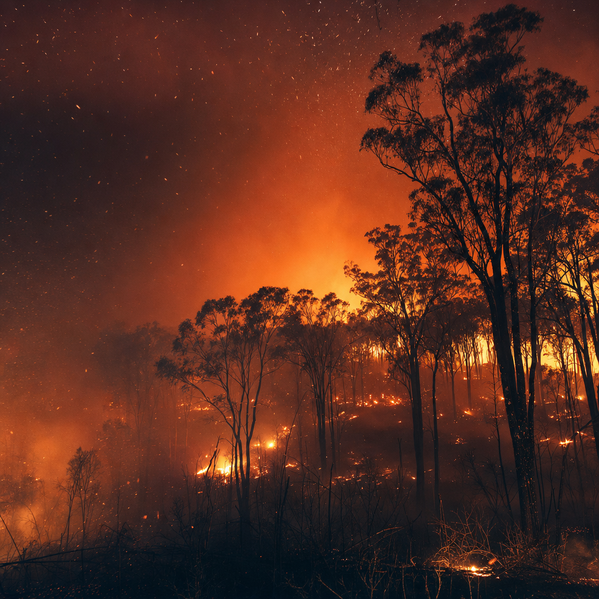
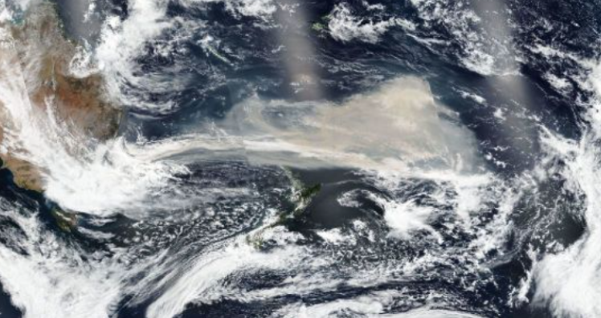
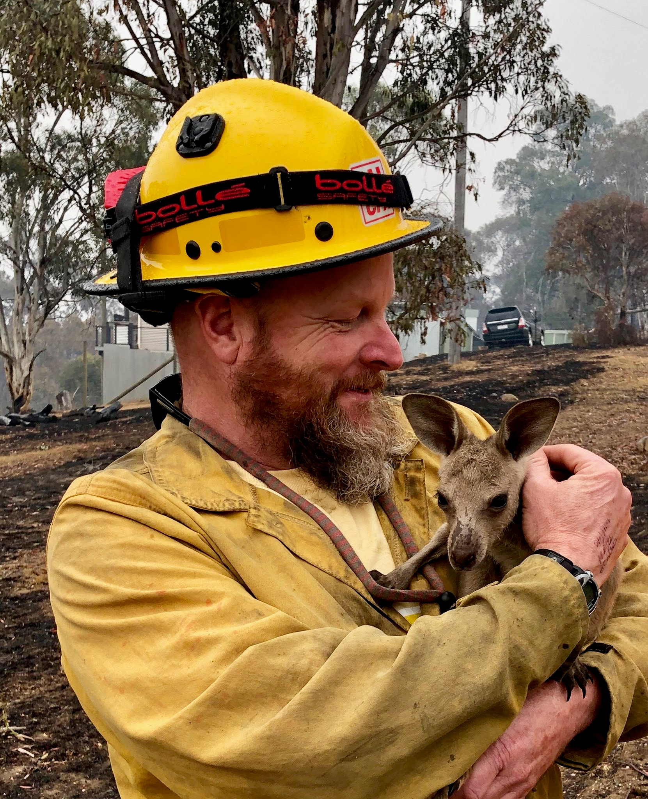

TidyTuesday 2020-01-07 · Australian Fires
The week the satellites lit up
An emergency dataset, six years on. Eight days of MODIS pixels, a century of weather records, and a single state where four million hectares were burning on the morning the file was downloaded.
The week the satellites lit up
In the seven days from 29 December 2019 to 5 January 2020, NASA's MODIS satellites returned 34,248 thermal-anomaly pixels over Australia. Detections were uneven — 6,936 on 30 December, 7,384 on 4 January, just 867 on 5 January as the file cuts off. The hot pixels were not random noise; they tracked the operational tempo of the disaster.
Fifty-nine percent of those pixels — 20,261 of them — came from a single state. Victoria, the second-smallest mainland state, contributed more than triple any other region. New South Wales added 13%, Western Australia 11%, Queensland and inland scrub a combined 12%, South Australia 4%, Tasmania just 1%. The disaster was not nationally distributed; it was concentrated in a corner.
Before you scroll: which state owned the satellite pixels?
Of the 34,248 MODIS detections, which Australian region contributed the most? Pick one.

On a continental scatter map, the high-confidence detections form a continuous arc along the south-eastern coast: East Gippsland in Victoria, up through the NSW South Coast, as far north as the Mid-North Coast. This is the picture from orbit, before any narrative is applied.
Sixty percent of Victoria's fires burned at night
The dangerous hallmark of Black Summer was night activity. In Victoria, 60.6% of MODIS detections were night pixels. New South Wales ran 53.5% night detections. Most other regions sat closer to a normal day-skewed pattern (WA 26.6%, SA 14.3%). Night fire is operationally menacing — humidity recovery stops, crews fatigue, fronts continue to advance.
The fire-radiative-power distribution has a long, heavy right tail. Most pixels were modest (the median released 38.7 megawatts), but the top one percent exceeded 1,657 MW and the single hottest pixel released 7,109 MW. This is the signature of pyrocumulonimbus events — fires generating their own weather.
The brightest pixels in the dataset cluster in a small lat-lon box in Victoria's alpine south-east, around -36.7 to -37.7 latitude and 147 to 149 longitude. The single hottest detection sat near (-37.74, 149.37) on the night of 29 December, releasing 5,587 MW — that is the East Gippsland fire that, days later, drove around 4,000 trapped residents and tourists onto the beach at Mallacoota waiting for navy evacuation.

The driest year, almost everywhere
Pooling the six BoM stations in the dataset, 2019's annual rainfall was 571 mm — just 61% of the 931 mm long-term mean. The decline from 2010 was almost monotonic: 1190, 1022, 952, 963, 769, 919, 847, 731, 671, 571. Three consecutive sub-average years preceded Black Summer.
At every individual station, 2019 ranked in the bottom 12 - 15% of years on record. In Canberra it was the single driest year in the available 11-year record. In Brisbane, 5th of 42 years. In Perth, 5th of 52. In Melbourne, 7th of 49. In Sydney, 19th of 161 — meaning four-fifths of all years recorded since 1858 were wetter.
But it was the shape of the drought that mattered most. Canberra received 1.2 mm in December against an 84.7 mm climatology — a deficit of -83.5 mm. Sydney 1.6 against 77.6 mm. Melbourne 4.4 against 62.3 mm. Brisbane lost 125.7 mm in November alone. The 2019 deficit was not spread evenly across the year; it collapsed exactly in the months that should have rewetted the fuel load before summer.

A century of warming, then 2019
Pooled across the long-record cities, 2019 sits at 26.4 °C — the highest annual mean daily maximum in the entire 1910–2019 series, and roughly 3 °C above the surrounding decade. The shape of the curve is gradual warming through the 20th century followed by a step-function jump in 2019.
The decadal comparison is unambiguous. Comparing 2010–2019 with 1910–1940, Canberra has warmed +2.39 °C, Perth +2.10 °C, Melbourne +1.62 °C, Sydney +1.17 °C. Brisbane lacks pre-1949 data so it cannot be compared on the same baseline. Every comparable city is between one and almost two and a half degrees hotter than it was a century ago.
When broken out by city, every series shows the same long-run warming signal — Canberra's first decade averages 18.61 °C, its last 21.53 °C; Perth runs from 23.41 to 25.82 °C — and 2019 visibly breaks above the prior decade's range in every city. The World Weather Attribution rapid-attribution study found that anthropogenic climate change has raised the Fire Weather Index in this region by at least 30%, driven mostly by extreme heat. Heat extremes of the 2019–20 magnitude are now at least twice as likely.
Four million hectares, in one state, on one day
On the morning of 6 January 2020 — the day this dataset was downloaded — the NSW Rural Fire Service reported 143 declared major incidents. Of those, 82 were under control, 30 being controlled, and 31 still out of control. The agency was tracking a continuous wave of active calls.
The 15 largest read like a roll call of Black Summer's worst fires. Gospers Mountain, in Wollemi National Park north-west of Sydney, had reached 511,661 hectares — the largest single forest fire from one ignition in Australian history (a lightning strike on 26 October 2019). Dunns Road sat at 313,536 ha and was still officially out of control. Currowan, Green Wattle Creek, Carrai Creek, Badja Forest Road — every one of the top eight individually exceeded 150,000 hectares.
Across the 99 incidents with declared sizes, NSW alone was tracking 3,996,859 hectares — about 4.0 million hectares already burning on 6 January, in just one state, with the season far from over. Set against the eventual nationwide season-long total of ~24 million hectares, this single-state, single-day snapshot already accounted for roughly one-sixth of the entire Black Summer toll.
What the dataset is, and what it is not
One discipline this dataset enforces: the satellite hotspots are not fires. A MODIS row is a 1 km thermal pixel that was anomalous when the satellite passed overhead. Roughly 100 hectares of ground per pixel, but the same fire is re-detected on every overpass and many pixels overlap, so the 34,000 rows cannot be multiplied to a hectare total. The official 24 Mha national figure comes from ground accounting, not the satellite.
The TidyTuesday release itself was not a normal weekly drop. Its readme reads as a warning: "PLEASE be cautious when plotting maps of ongoing fires." It was assembled in the middle of an active disaster, three days into the new year, while a country burned. This blog uses the same dataset to step back, six years on, and ask what the data — viewed against a longer record — actually showed.
The data didn't cause Black Summer. Climate change, drought cycles, fuel load, and a complex coupled-ocean precondition involving the Indian Ocean Dipole and a Central Pacific El Niño did. But on this particular eight-day window, the disaster was already legible to anyone with a satellite, a rainfall gauge, and a temperature thermometer. The slow lines on the chart had finally crossed.

References
- Data: TidyTuesday 2020-01-07 — Australian Fires (R for Data Science, MIT-licensed).
- Source — fire pixels: NASA FIRMS / MODIS Collection 6 active-fire product (FAQ, with caveats).
- Source — incidents: NSW Rural Fire Service major incidents feed (snapshot 2020-01-06).
- Source — weather: BoM Annual Climate Statement 2019.
- Context — season: 2019–20 Australian bushfire season (Wikipedia).
- Context — health: Acute health effects of bushfire smoke on mortality in Sydney (Environment International, 2022).
- Context — attribution: World Weather Attribution: Bushfires in Australia 2019–2020.
- Tools: Vega-Lite 5, Leaflet 1.9, OpenStreetMap tiles. Reference photos from Wikimedia Commons (public domain).